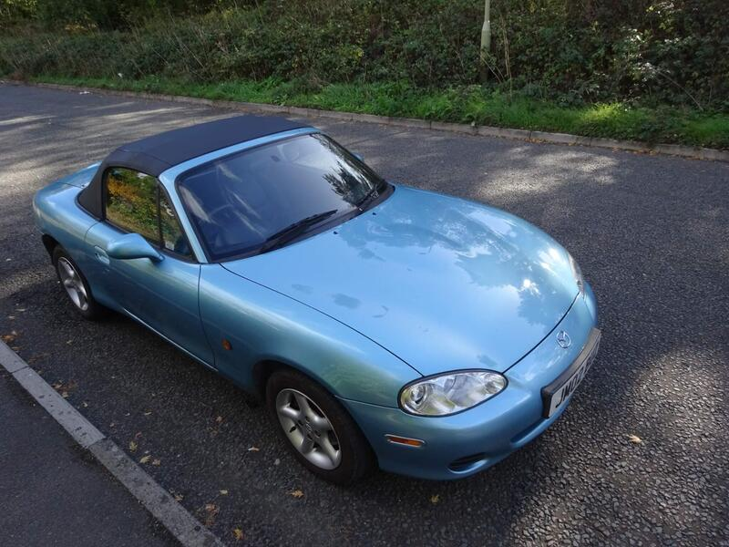
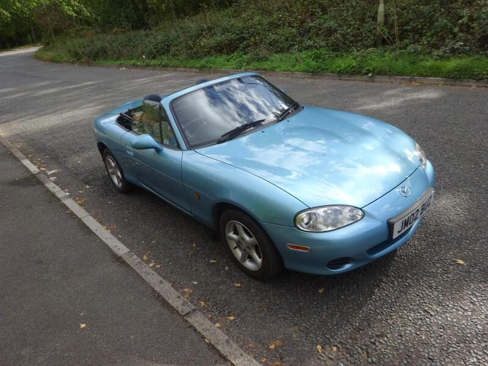
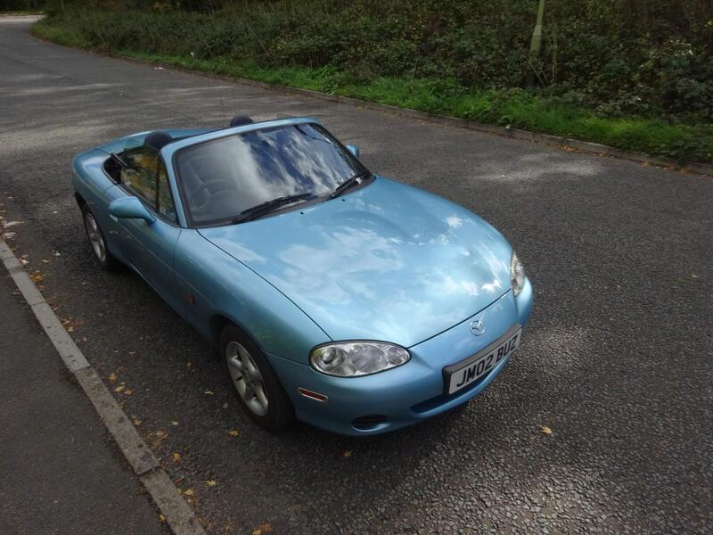
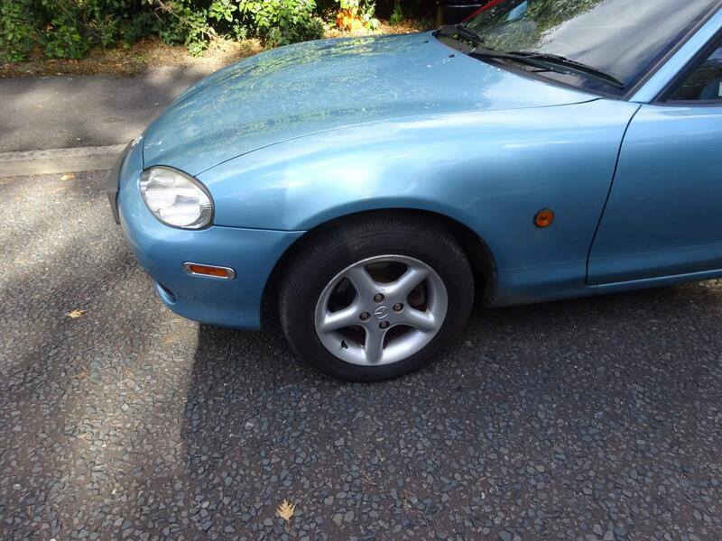

← All NB-FLRanked #15 of 45 for value




Seller photos from the AutoTrader ad.
✓ Checked 12 Oct
2002 · Standard
2002 MX-5 1.8
Fair money for a trade car with the cambelt done.
£3,330109,878 miles · Camberley
View on AutoTrader ↗Key facts
| Price | £3,330 |
|---|---|
| Year | 2002 |
| Miles | 109,878 |
| Variant | 1.8 |
| Edition | Standard |
| Engine | 1.8 |
| Colour | Blue |
| Registration | 2002 (02 reg) |
| Owners | 4 owners |
| Seller | Trade |
| Location | Camberley |
| From Poole | ~75 mi (estimate) |
| Source | AutoTrader, checked 12 Oct 2026 |
Why buy it
- Cambelt done, two keys, leather (ad)
- Dealer: full year's MOT
Things to check
- 110k miles
110k miles
- The trader is based in Yateley
The trader is based in Yateley (ad)
- Mk2.5 weak spots
Sills, rear arches and chassis rails for rust, the hood seams, and when the cambelt was last changed.
Seller says (extract)
“Absolutely great example Loads of History and cambelt done , straight from the main dealer Two Keys Full Years MOT Leather seats fantastic example p. Serviced and ready to go. Please call to make an appointment you will not be disappointed 07770371954 .We are located in Yateley 7 minutes from the M3 junction 4 20 minutes from the the M25 junction 12 and 25 minutes reading main line station 30 minutes A3 Guildford and 45 minutes A 3…”